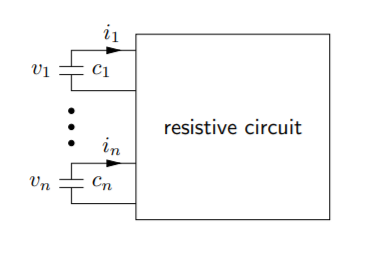

Applications of ADI.pdf is the main memo I wrote for the project. It is simply meant as supplemental material for my benefit, as well as to update Prof. Robert Gower and his PhD student Nidham G. The code is the python notebook in this folder, also previewable as notebook.pdf.
The memo consists of 3 applications; one Discretized PDE, one for Dynamical Systems and Control Theory, and one for Denoising Images. These examples were primarily based on the survey Computational Methods for Linear Matrix Equations. The PDF is also in this folder.
For the Dynamical Systems/Control Theory example, the goal is to model VLSI as a dynamical system over time. For now I have chosen to look at discrete time intervals, which may not be common practice. The application to VLSI is mentioned in this paper (2. Motivating Examples) but the details of how to model a circuit aren’t mentioned there.
Instead, I based the example I coded after the toy example mentioned in these slides (page 15).

The circuit is represented by a matrix of conductivities.
Some other readings
- Model reduction is a topic that comes up frequently. The size of the VLSI matrix is so massive that it is only feasible to process it when it has been simplified
- Is it even a linear dynamical system? It needs to be linear for this numerical analysis to be worth doing
- thermic/electro magnetic effects are what can disturb the signal; multilayered chips are a problem
- What are Pade approximation and rational interpolation methods?
- I know what Krylov subspaces are, but not well enough to understand how they’re represented here.
- This paper doesn’t go into real detail about VLSI, questions below are also unanswered
Notes
- Make a rational approximation R(x) = N(x) / D(x) where N and D are polynomials, and D has the constant 1. N is of degree m, D is degree n
- R(0) = f(0) for all derivatives (1st, 2nd, 3rd … up to the m+nth) .
- Then we expand R(x) in Maclaurin series.
- But if we look at f(0) - R(0) the first m+n terms are the same, so the error f(0) - R(0) is actually very small and starts being nonzero at the x^(m + n + 1) term, which by then in the Maclaurin series is already tiny
- In general better than Taylor series
- May still work when Taylor series doesn’t converge
- How does this work with VLSI?
- Krylov subspaces
- Maclaurin series
Problems/questions
- I haven’t seen a resource that actually verifies that we’re modelling the effects of a delta signal. The above picture from the stanford slides implies it, but only for a toy example
- What kind of circuits are represented? Just a network of resistors? How do I construct a matrix A such that it represents a realistic VLSI system that someone is interested in modelling in modern applications?
Irrelevant things